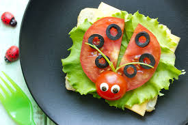
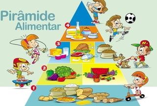
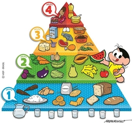

Bruna Nutricionista
Introdução Alimentar
Em geral, crianças começam a conhecer novos alimentos ainda bebês, inicialmente por papinhas e frutas. Aos poucos, são apresentados novos tipos de comida, conforme o desenvolvimento dos dentes e do paladar. Apesar de muitos pais acrescentarem açúcar e sal nos alimentos de seus filhos, o ideal é evitar o uso desses itens ao máximo, deixando a comida com gosto o mais natural possível ou usando apenas ervas e especiarias como tempero.
Para iniciar a introdução alimentar com sucesso, é preciso respeitar as necessidades nutricionais e preferências de cada fase da vida da criança. O gosto por alimentos saudáveis é algo aprendido, que pode levar um pouco de tempo para se consolidar. Por isso, é importante deixar frutas, legumes e lanches nutritivos acessíveis para as crianças.
Criar um ambiente tranquilo e estimular a criança a escolher seus alimentos e a comer sozinha também é uma forma de fazer uma introdução alimentar bem-sucedida. Essa atitude incentiva que o pequeno crie consciência sobre o que come e ajuda a tirar a ansiedade que muitas crianças sentem durante a hora da refeição.
Um bom nutricionista pode ajudar os pais no momento de selecionar os melhores alimentos e pensar nas combinações para cada refeição. Por isso, é importante consultar esse profissional para entender melhor as necessidades das crianças em cada etapa da vida.
Projeto alimentação saudavel!

Piramide alimentar

